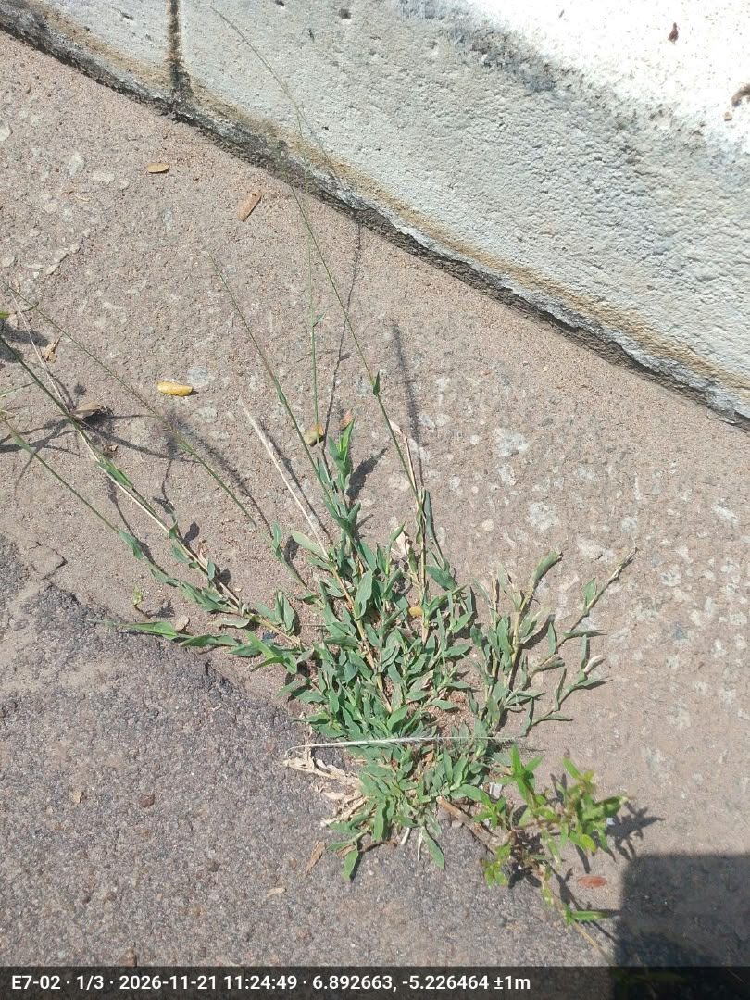
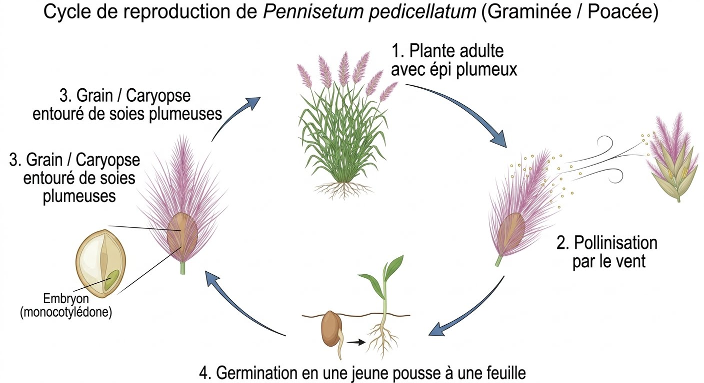

1 milliard d'années


Appartenant aux angiospermes de la famille des Poaceae, le Pennisetum pedicellatum est une graminée vasculaire aux racines fasciculées qui acheminent l'eau et les nutriments sous forme de sève. Elle se compose d'une tige dressée appelée chaume et de feuilles rubanées, surmontées d'épis plumeux produisant les graines.
En savoir plus